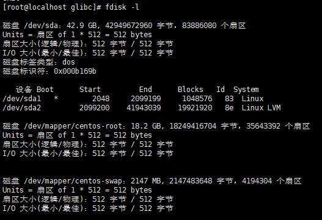
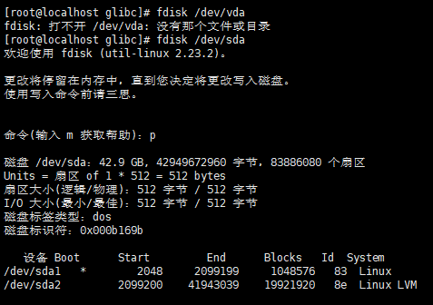
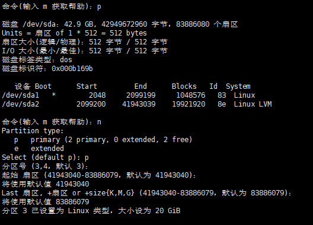
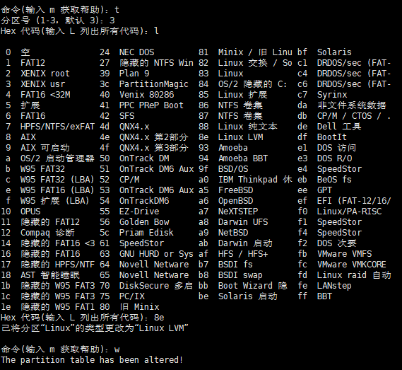

<!DOCTYPE HTML>
<html lang="zh-CN">
<head><meta name="generator" content="Hexo 3.8.0">
    <!--Setting-->
    <meta charset="UTF-8">
    <meta name="viewport" content="width=device-width, user-scalable=no, initial-scale=1.0, maximum-scale=1.0, minimum-scale=1.0">
    <meta http-equiv="X-UA-Compatible" content="IE=Edge,chrome=1">
    <meta http-equiv="Cache-Control" content="no-siteapp">
    <meta http-equiv="Cache-Control" content="no-transform">
    <meta name="renderer" content="webkit|ie-comp|ie-stand">
    <meta name="apple-mobile-web-app-capable" content="我的博客 - blog">
    <meta name="apple-mobile-web-app-status-bar-style" content="black">
    <meta name="format-detection" content="telephone=no,email=no,adress=no">
    <meta name="browsermode" content="application">
    <meta name="screen-orientation" content="portrait">
    <link rel="dns-prefetch" href="https://lives.xtcgch.ink">
    <!--SEO-->

<meta name="description" content="脑容量不够，笔记来凑">


<meta name="robots" content="all">
<meta name="google" content="all">
<meta name="googlebot" content="all">
<meta name="verify" content="all">
    <!--Title-->


<title>【原理】 Linux之CentOS7环境配置篇 | 我的博客 - blog</title>


    <link rel="alternate" href="/atom.xml" title="我的博客 - blog" type="application/atom+xml">


    <link rel="icon" href="https://blog.xtcgch.ink/img/background/海绵宝宝.ico">

    


<link rel="stylesheet" href="/css/bootstrap.min.css?rev=3.3.7">
<link rel="stylesheet" href="/css/font-awesome.min.css?rev=4.5.0">
<link rel="stylesheet" href="/css/style.css?rev=@@hash">


    


    

</head>

</html>
<!--[if lte IE 8]>
<style>
    html{ font-size: 1em }
</style>
<![endif]-->
<!--[if lte IE 9]>
<div style="ie">你使用的浏览器版本过低，为了你更好的阅读体验，请更新浏览器的版本或者使用其他现代浏览器，比如Chrome、Firefox、Safari等。</div>
<![endif]-->

<body>
    <header class="main-header" style="background-image:url(https://blog.xtcgch.ink/img/head-bg.jpg)">
    <div class="main-header-box">
        <a class="header-avatar" href="/" title="unistd68">
            
        </a>
        <div class="branding">
        	<!--<h2 class="text-hide">Snippet主题,从未如此简单有趣</h2>-->
            
                <h2> 脑容量不够，笔记来凑 </h2>
            
    	</div>
    </div>
</header>
    <nav class="main-navigation">
    <div class="container">
        <div class="row">
            <div class="col-sm-12">
                <div class="navbar-header"><span class="nav-toggle-button collapsed pull-right" data-toggle="collapse" data-target="#main-menu" id="mnav">
                    <span class="sr-only"></span>
                        <i class="fa fa-bars"></i>
                    </span>
                    <a class="navbar-brand" href="https://lives.xtcgch.ink">我的博客 - blog</a>
                </div>
                <div class="collapse navbar-collapse" id="main-menu">
                    <ul class="menu">
                        
                            <li role="presentation" class="text-center">
                                <a href="https://blog.xtcgch.ink/"><i class="fa "></i>主页</a>
                            </li>
                        
                            <li role="presentation" class="text-center">
                                <a href="https://blog.xtcgch.ink/categories/原理/"><i class="fa "></i>原理</a>
                            </li>
                        
                            <li role="presentation" class="text-center">
                                <a href="https://blog.xtcgch.ink/categories/代码/"><i class="fa "></i>代码</a>
                            </li>
                        
                            <li role="presentation" class="text-center">
                                <a href="https://blog.xtcgch.ink/categories/开源/"><i class="fa "></i>开源</a>
                            </li>
                        
                            <li role="presentation" class="text-center">
                                <a href="https://blog.xtcgch.ink/categories/面试/"><i class="fa "></i>面试</a>
                            </li>
                        
                            <li role="presentation" class="text-center">
                                <a href="https://blog.xtcgch.ink/categories/其他/"><i class="fa "></i>其他</a>
                            </li>
                        
                            <li role="presentation" class="text-center">
                                <a href="https://blog.xtcgch.ink/archives/"><i class="fa "></i>时间轴</a>
                            </li>
                        
                    </ul>
                </div>
            </div>
        </div>
    </div>
</nav>
    <section class="content-wrap">
        <div class="container">
            <div class="row">
                <main class="col-md-8 main-content m-post">
                    <p id="process"></p>
<article class="post">
    <div class="post-head">
        <h1 id="【原理】 Linux之CentOS7环境配置篇">
            
	            【原理】 Linux之CentOS7环境配置篇
            
        </h1>
        <div class="post-meta">
    
    
    <span class="categories-meta fa-wrap">
        <i class="fa fa-folder-open-o"></i>
        <a href="https://blog.xtcgch.ink/categories/原理">
            原理
        </a>
    </span>
    

    
    <span class="fa-wrap">
        <i class="fa fa-tags"></i>
        <span class="tags-meta">
            
                
                    <a href="https://blog.xtcgch.ink/tags/LINUX" title="LINUX">
                        LINUX
                    </a>
                
                    <a href="https://blog.xtcgch.ink/tags/CENTOS" title="CENTOS">
                        CENTOS
                    </a>
                
                    <a href="https://blog.xtcgch.ink/tags/MYSQL" title="MYSQL">
                        MYSQL
                    </a>
                
            
        </span>
    </span>
    

    
        
        <span class="fa-wrap">
            <i class="fa fa-clock-o"></i>
            <span class="date-meta">2019/01/09</span>
        </span>
        
    
</div>

            
            
            <p class="fa fa-exclamation-triangle warning">
                本文于<strong>1047</strong>天之前发表，文中内容可能已经过时。
            </p>
        
    </div>
    
    <div class="post-body post-content">
        <p><strong>摘要：</strong>本文主要介绍在CentOS7下组件的安装和环境的配置。</p>
<a id="more"></a>
<h2 id="1、脑图"><a href="#1、脑图" class="headerlink" title="1、脑图"></a>1、脑图</h2><p></p>
<hr>
<p><strong>前言</strong>:都是在root权限下进行安装和配置。</p>
<h1 id="★★★-MYSQL8的安装和配置-★★★"><a href="#★★★-MYSQL8的安装和配置-★★★" class="headerlink" title="★★★ MYSQL8的安装和配置 ★★★"></a><table><tr><td bgcolor="#C7C7C7">★★★ MYSQL8的安装和配置 ★★★</td></tr></table></h1><p>检测操作系统自带安装的mysql和mariadb服务</p>
<h2 id="检测操作系统自带安装的mysql和mariadb服务"><a href="#检测操作系统自带安装的mysql和mariadb服务" class="headerlink" title=" 检测操作系统自带安装的mysql和mariadb服务"></a><table><tr><td bgcolor="#C7C7C7"> 检测操作系统自带安装的mysql和mariadb服务</td></tr></table></h2><figure class="highlight plain"><table><tr><td class="gutter"><pre><span class="line">1</span><br><span class="line">2</span><br></pre></td><td class="code"><pre><span class="line">rpm -qa | grep mysql</span><br><span class="line">rpm -qa | grep mariadb</span><br></pre></td></tr></table></figure>
<h2 id="卸载mysql和mariadb服务"><a href="#卸载mysql和mariadb服务" class="headerlink" title=" 卸载mysql和mariadb服务"></a><table><tr><td bgcolor="#C7C7C7"> 卸载mysql和mariadb服务</td></tr></table></h2><figure class="highlight plain"><table><tr><td class="gutter"><pre><span class="line">1</span><br><span class="line">2</span><br><span class="line">3</span><br><span class="line">4</span><br></pre></td><td class="code"><pre><span class="line">rpm -e mariadb-devel* --nodeps</span><br><span class="line">rpm -e mariadb-libs* --nodeps</span><br><span class="line">rpm -e qt5-qtbase-mysql* --nodeps</span><br><span class="line">rpm -e qt-mysql*  --nodeps</span><br></pre></td></tr></table></figure>
<h2 id="查看repo源"><a href="#查看repo源" class="headerlink" title=" 查看repo源"></a><table><tr><td bgcolor="#C7C7C7"> 查看repo源</td></tr></table></h2><figure class="highlight plain"><table><tr><td class="gutter"><pre><span class="line">1</span><br></pre></td><td class="code"><pre><span class="line">yum repolist all | grep mysql</span><br></pre></td></tr></table></figure>
<p>使用repo源在线安装</p>
<h2 id="repo源下载和安装"><a href="#repo源下载和安装" class="headerlink" title=" repo源下载和安装"></a><table><tr><td bgcolor="#C7C7C7"> repo源下载和安装</td></tr></table></h2><ul>
<li>下载一：<code>https://dev.mysql.com/downloads/repo/yum/</code></li>
<li>下载二：<code>wget https://repo.mysql.com//mysql80-community-release-el7-1.noarch.rpm</code></li>
<li>安装：<code>rpm -ivh mysql80-community-release-el7-1.noarch.rpm</code></li>
</ul>
<h2 id="安装mysql-server"><a href="#安装mysql-server" class="headerlink" title=" 安装mysql-server"></a><table><tr><td bgcolor="#C7C7C7"> 安装mysql-server</td></tr></table></h2><figure class="highlight plain"><table><tr><td class="gutter"><pre><span class="line">1</span><br></pre></td><td class="code"><pre><span class="line">yum install mysql-server</span><br></pre></td></tr></table></figure>
<p>至此，mysql已经安装完成！可以小高兴一会！</p>
<h2 id="mysql默认安装位置"><a href="#mysql默认安装位置" class="headerlink" title=" mysql默认安装位置"></a><table><tr><td bgcolor="#C7C7C7"> mysql默认安装位置</td></tr></table></h2><ul>
<li>查看mysql相关: <code>whereis mysql</code></li>
<li>头文件：<code></code></li>
<li>lib包： <code>/usr/lib64/mysql</code></li>
<li>可执行文件： <code>/usr/bin/mysql</code></li>
<li>日志: <code></code></li>
<li>socket: <code>/var/lib/mysql/mysql.sock</code></li>
<li>配置文件: <code>/etc/my.cnf</code></li>
<li>mysqldump文件位置:<code>/usr/bin/mysqldump</code></li>
<li>mysql数据目录:<code>/var/lib/mysql</code></li>
</ul>
<h2 id="mysql服务的管理"><a href="#mysql服务的管理" class="headerlink" title=" mysql服务的管理"></a><table><tr><td bgcolor="#C7C7C7"> mysql服务的管理</td></tr></table></h2><ul>
<li>启动：<code>service mysqld start</code>或<code>systemctl start mysql</code></li>
<li>重启：<code>service mysqld restart</code>或<code>systemctl restart mysql</code></li>
<li>关闭：<code>service mysqld stop</code>或<code>systemctl stop mysql</code></li>
</ul>
<h2 id="查看初始密码"><a href="#查看初始密码" class="headerlink" title=" 查看初始密码"></a><table><tr><td bgcolor="#C7C7C7"> 查看初始密码</td></tr></table></h2><p><code>sudo grep &#39;temporary password&#39; /var/log/mysqld.log</code></p>
<h2 id="设置密码"><a href="#设置密码" class="headerlink" title=" 设置密码"></a><table><tr><td bgcolor="#C7C7C7"> 设置密码</td></tr></table></h2><p>密码组合规则：<strong>大写字母+小写字母+数字和符号</strong><br><figure class="highlight plain"><table><tr><td class="gutter"><pre><span class="line">1</span><br></pre></td><td class="code"><pre><span class="line">ALTER USER &apos;root&apos;@&apos;localhost&apos; IDENTIFIED WITH mysql_native_password BY &quot;ROOTroot@123456&quot;;</span><br></pre></td></tr></table></figure></p>
<p>立即生效：<br><figure class="highlight plain"><table><tr><td class="gutter"><pre><span class="line">1</span><br></pre></td><td class="code"><pre><span class="line">flush privileges;</span><br></pre></td></tr></table></figure></p>
<h2 id="修改root远程登录访问权限"><a href="#修改root远程登录访问权限" class="headerlink" title=" 修改root远程登录访问权限"></a><table><tr><td bgcolor="#C7C7C7"> 修改root远程登录访问权限</td></tr></table></h2><figure class="highlight plain"><table><tr><td class="gutter"><pre><span class="line">1</span><br><span class="line">2</span><br><span class="line">3</span><br></pre></td><td class="code"><pre><span class="line">update user set host=&apos;%&apos; where user=&apos;root&apos;;</span><br><span class="line"> </span><br><span class="line">flush privileges;</span><br></pre></td></tr></table></figure>
<h2 id="创建用户"><a href="#创建用户" class="headerlink" title=" 创建用户"></a><table><tr><td bgcolor="#C7C7C7"> 创建用户</td></tr></table></h2><figure class="highlight plain"><table><tr><td class="gutter"><pre><span class="line">1</span><br><span class="line">2</span><br></pre></td><td class="code"><pre><span class="line">CREATE USER &apos;gch&apos;@&apos;%&apos; IDENTIFIED BY &apos;GCHgch@123456&apos;;</span><br><span class="line">flush privileges;</span><br></pre></td></tr></table></figure>
<h2 id="安装mysql-h"><a href="#安装mysql-h" class="headerlink" title=" 安装mysql.h"></a><table><tr><td bgcolor="#C7C7C7"> 安装mysql.h</td></tr></table></h2><figure class="highlight plain"><table><tr><td class="gutter"><pre><span class="line">1</span><br></pre></td><td class="code"><pre><span class="line">sudo yum install mysql-devel</span><br></pre></td></tr></table></figure>
<hr>
<p><strong>LINUX的配置</strong></p>
<h2 id="安装firewalld"><a href="#安装firewalld" class="headerlink" title=" 安装firewalld"></a><table><tr><td bgcolor="#C7C7C7"> 安装firewalld</td></tr></table></h2><p>在CentOS 7中防火墙已经由firewalld来管理,Centos7默认安装了firewalld,没有安装的可以用yum 命令安装，与iptables区别不小</p>
<figure class="highlight plain"><table><tr><td class="gutter"><pre><span class="line">1</span><br></pre></td><td class="code"><pre><span class="line">yum install firewalld firewalld-config</span><br></pre></td></tr></table></figure>
<h2 id="查看防火墙状态"><a href="#查看防火墙状态" class="headerlink" title=" 查看防火墙状态"></a><table><tr><td bgcolor="#C7C7C7"> 查看防火墙状态</td></tr></table></h2><figure class="highlight plain"><table><tr><td class="gutter"><pre><span class="line">1</span><br></pre></td><td class="code"><pre><span class="line">systemctl status firewalld //或者 firewall-cmd --state</span><br></pre></td></tr></table></figure>
<h2 id="启动防火墙"><a href="#启动防火墙" class="headerlink" title=" 启动防火墙"></a><table><tr><td bgcolor="#C7C7C7"> 启动防火墙</td></tr></table></h2><figure class="highlight plain"><table><tr><td class="gutter"><pre><span class="line">1</span><br></pre></td><td class="code"><pre><span class="line">systemctl start firewalld.service</span><br></pre></td></tr></table></figure>
<h2 id="重启防火墙"><a href="#重启防火墙" class="headerlink" title=" 重启防火墙"></a><table><tr><td bgcolor="#C7C7C7"> 重启防火墙</td></tr></table></h2><figure class="highlight plain"><table><tr><td class="gutter"><pre><span class="line">1</span><br></pre></td><td class="code"><pre><span class="line">firewall-cmd --reload  或者  service firewalld restart</span><br></pre></td></tr></table></figure>
<h2 id="防火墙开放3306端口"><a href="#防火墙开放3306端口" class="headerlink" title=" 防火墙开放3306端口"></a><table><tr><td bgcolor="#C7C7C7"> 防火墙开放3306端口</td></tr></table></h2><figure class="highlight plain"><table><tr><td class="gutter"><pre><span class="line">1</span><br></pre></td><td class="code"><pre><span class="line">firewall-cmd --zone=public --add-port=3306/tcp --permanent  //--permanent永久生效,没有此参数防火墙重启便失效</span><br></pre></td></tr></table></figure>
<h2 id="防火墙关闭开放的3306端口"><a href="#防火墙关闭开放的3306端口" class="headerlink" title=" 防火墙关闭开放的3306端口"></a><table><tr><td bgcolor="#C7C7C7"> 防火墙关闭开放的3306端口</td></tr></table></h2><figure class="highlight plain"><table><tr><td class="gutter"><pre><span class="line">1</span><br></pre></td><td class="code"><pre><span class="line">firewall-cmd --zone=public --remove-port=3306/tcp --permanent</span><br></pre></td></tr></table></figure>
<h2 id="禁用防火墙"><a href="#禁用防火墙" class="headerlink" title=" 禁用防火墙"></a><table><tr><td bgcolor="#C7C7C7"> 禁用防火墙</td></tr></table></h2><figure class="highlight plain"><table><tr><td class="gutter"><pre><span class="line">1</span><br></pre></td><td class="code"><pre><span class="line">systemctl stop firewalld</span><br></pre></td></tr></table></figure>
<h2 id="设置开机启动"><a href="#设置开机启动" class="headerlink" title=" 设置开机启动"></a><table><tr><td bgcolor="#C7C7C7"> 设置开机启动</td></tr></table></h2><figure class="highlight plain"><table><tr><td class="gutter"><pre><span class="line">1</span><br></pre></td><td class="code"><pre><span class="line">systemctl enable firewalld</span><br></pre></td></tr></table></figure>
<h2 id="停止并禁用开机启动"><a href="#停止并禁用开机启动" class="headerlink" title=" 停止并禁用开机启动"></a><table><tr><td bgcolor="#C7C7C7"> 停止并禁用开机启动</td></tr></table></h2><figure class="highlight plain"><table><tr><td class="gutter"><pre><span class="line">1</span><br></pre></td><td class="code"><pre><span class="line">sytemctl disable firewalld</span><br></pre></td></tr></table></figure>
<h2 id="查看端口列表"><a href="#查看端口列表" class="headerlink" title=" 查看端口列表"></a><table><tr><td bgcolor="#C7C7C7"> 查看端口列表</td></tr></table></h2><figure class="highlight plain"><table><tr><td class="gutter"><pre><span class="line">1</span><br></pre></td><td class="code"><pre><span class="line">firewall-cmd --permanent --list-port</span><br></pre></td></tr></table></figure>
<ul>
<li>进入：<code>mysql -uroot</code>,注意，不要使用-p</li>
<li>查看：<code>use mysql;</code> , <code>show tables;</code> , <code>describe user;</code> </li>
<li>配置新密码：<code>update user set password=password(&#39;new password&#39;) where user=&#39;root&#39;;</code>注意，密码要使用password(‘’)函数进行散列化</li>
<li>刷新缓存，让配置立即生效：<code>flush privileges;</code></li>
</ul>
<h2 id="my-cnf文件解读"><a href="#my-cnf文件解读" class="headerlink" title=" my.cnf文件解读"></a><table><tr><td bgcolor="#C7C7C7"> my.cnf文件解读</td></tr></table></h2><figure class="highlight plain"><table><tr><td class="gutter"><pre><span class="line">1</span><br><span class="line">2</span><br><span class="line">3</span><br><span class="line">4</span><br><span class="line">5</span><br><span class="line">6</span><br><span class="line">7</span><br><span class="line">8</span><br><span class="line">9</span><br><span class="line">10</span><br><span class="line">11</span><br><span class="line">12</span><br><span class="line">13</span><br><span class="line">14</span><br><span class="line">15</span><br><span class="line">16</span><br><span class="line">17</span><br><span class="line">18</span><br><span class="line">19</span><br><span class="line">20</span><br><span class="line">21</span><br><span class="line">22</span><br><span class="line">23</span><br><span class="line">24</span><br><span class="line">25</span><br><span class="line">26</span><br><span class="line">27</span><br><span class="line">28</span><br><span class="line">29</span><br><span class="line">30</span><br><span class="line">31</span><br><span class="line">32</span><br><span class="line">33</span><br><span class="line">34</span><br><span class="line">35</span><br><span class="line">36</span><br><span class="line">37</span><br><span class="line">38</span><br><span class="line">39</span><br><span class="line">40</span><br><span class="line">41</span><br><span class="line">42</span><br><span class="line">43</span><br><span class="line">44</span><br><span class="line">45</span><br><span class="line">46</span><br><span class="line">47</span><br><span class="line">48</span><br><span class="line">49</span><br><span class="line">50</span><br><span class="line">51</span><br><span class="line">52</span><br><span class="line">53</span><br><span class="line">54</span><br><span class="line">55</span><br><span class="line">56</span><br><span class="line">57</span><br><span class="line">58</span><br><span class="line">59</span><br><span class="line">60</span><br><span class="line">61</span><br><span class="line">62</span><br><span class="line">63</span><br><span class="line">64</span><br><span class="line">65</span><br><span class="line">66</span><br><span class="line">67</span><br><span class="line">68</span><br><span class="line">69</span><br><span class="line">70</span><br><span class="line">71</span><br><span class="line">72</span><br><span class="line">73</span><br><span class="line">74</span><br><span class="line">75</span><br><span class="line">76</span><br><span class="line">77</span><br><span class="line">78</span><br><span class="line">79</span><br><span class="line">80</span><br><span class="line">81</span><br><span class="line">82</span><br><span class="line">83</span><br><span class="line">84</span><br><span class="line">85</span><br><span class="line">86</span><br><span class="line">87</span><br><span class="line">88</span><br><span class="line">89</span><br></pre></td><td class="code"><pre><span class="line">[client]</span><br><span class="line">port = 3306</span><br><span class="line">socket = /usr/local/services/mysql/var/data/mysql.sock</span><br><span class="line"></span><br><span class="line">[mysqld]</span><br><span class="line">bind-address = 0.0.0.0</span><br><span class="line">port = 3306</span><br><span class="line">socket = /usr/local/services/mysql/var/data/mysql.sock</span><br><span class="line">pid-file = /usr/local/services/mysql/var/logs/mysql.pid</span><br><span class="line">character-set-server = utf8</span><br><span class="line">basedir = /usr/local/services/mysql</span><br><span class="line">datadir = /usr/local/services/mysql/var/data</span><br><span class="line"></span><br><span class="line">skip-external-locking</span><br><span class="line">skip-name-resolve</span><br><span class="line">lower_case_table_names = 1</span><br><span class="line">log-bin-trust-function-creators = 1</span><br><span class="line"></span><br><span class="line">max_connections = 6000</span><br><span class="line">max_user_connections = 6000</span><br><span class="line">max_connect_errors = 4000</span><br><span class="line">wait_timeout = 86400</span><br><span class="line">interactive_timeout = 86400</span><br><span class="line">table_open_cache = 512</span><br><span class="line">max_allowed_packet = 32M</span><br><span class="line">sort_buffer_size = 2M</span><br><span class="line">join_buffer_size = 2M</span><br><span class="line">thread_cache_size = 8</span><br><span class="line">thread_concurrency = 8</span><br><span class="line">query_cache_size = 32M</span><br><span class="line">#default-storage-engine = InnoDB</span><br><span class="line"></span><br><span class="line">#sql_mode=&quot;STRICT_ALL_TABLES,NO_AUTO_CREATE_USER&quot;</span><br><span class="line">server-id = 1</span><br><span class="line"></span><br><span class="line">log-short-format</span><br><span class="line">log-error = /usr/local/services/mysql/var/logs/mysql.log</span><br><span class="line">slow_query_log</span><br><span class="line">long_query_time = 2</span><br><span class="line">slow_query_log_file = /usr/local/services/mysql/var/logs/mysql-slow.log</span><br><span class="line"></span><br><span class="line">log-bin = /usr/local/services/mysql/var/binlog/mysql-bin</span><br><span class="line">log_bin_trust_function_creators=1</span><br><span class="line">binlog_format = MIXED</span><br><span class="line">expire_logs_days = 10</span><br><span class="line"></span><br><span class="line"># INNODB Specific options</span><br><span class="line">innodb_data_home_dir = /usr/local/services/mysql/var/data</span><br><span class="line">innodb_log_group_home_dir = /usr/local/services/mysql/var/redolog</span><br><span class="line">innodb_additional_mem_pool_size = 10M</span><br><span class="line">innodb_buffer_pool_size = 4G</span><br><span class="line">innodb_data_file_path = ibdata1:100M:autoextend</span><br><span class="line">innodb_file_io_threads = 4</span><br><span class="line">innodb_thread_concurrency = 8</span><br><span class="line">innodb_flush_log_at_trx_commit = 0</span><br><span class="line">innodb_flush_method = O_DIRECT</span><br><span class="line">innodb_log_buffer_size = 128M</span><br><span class="line">innodb_log_file_size = 256M</span><br><span class="line">innodb_log_files_in_group = 3</span><br><span class="line">innodb_max_dirty_pages_pct = 90</span><br><span class="line">innodb_lock_wait_timeout = 50</span><br><span class="line">innodb_file_per_table = 1</span><br><span class="line"></span><br><span class="line"># MyISAM Specific options</span><br><span class="line">key_buffer_size = 384M</span><br><span class="line">read_buffer_size = 4M</span><br><span class="line">read_rnd_buffer_size = 8M</span><br><span class="line">myisam_sort_buffer_size = 128M</span><br><span class="line">myisam_max_sort_file_size = 1G</span><br><span class="line">myisam_repair_threads = 1</span><br><span class="line">myisam_recover</span><br><span class="line"></span><br><span class="line">[mysqldump]</span><br><span class="line">quick</span><br><span class="line">max_allowed_packet = 16M</span><br><span class="line"></span><br><span class="line">[mysql]</span><br><span class="line">default-character-set = utf8</span><br><span class="line">no-auto-rehash</span><br><span class="line">socket = /usr/local/services/mysql/var/data/mysql.sock</span><br><span class="line"></span><br><span class="line">[myisamchk]</span><br><span class="line">key_buffer_size = 256M</span><br><span class="line">sort_buffer_size = 256M</span><br><span class="line">read_buffer = 2M</span><br><span class="line">write_buffer = 2M</span><br><span class="line"></span><br><span class="line">[mysqlhotcopy]</span><br><span class="line">interactive-timeout</span><br></pre></td></tr></table></figure>
<hr>
<h1 id="★★★-安装REDIS-★★★"><a href="#★★★-安装REDIS-★★★" class="headerlink" title="★★★ 安装REDIS ★★★"></a><table><tr><td bgcolor="#C7C7C7">★★★ 安装REDIS ★★★</td></tr></table></h1><h2 id="前置条件"><a href="#前置条件" class="headerlink" title=" 前置条件"></a><table><tr><td bgcolor="#C7C7C7"> 前置条件</td></tr></table></h2><ul>
<li>gcc : for redis</li>
<li>tcl 8.5: for  make test</li>
</ul>
<h2 id="TCL安装"><a href="#TCL安装" class="headerlink" title=" TCL安装"></a><table><tr><td bgcolor="#C7C7C7"> TCL安装</td></tr></table></h2><p>使用ActiveTcl代替tcl</p>
<p>下载，从浏览器下载源码包：<br><figure class="highlight plain"><table><tr><td class="gutter"><pre><span class="line">1</span><br></pre></td><td class="code"><pre><span class="line">https://platform.activestate.com/unistd68/ActiveTcl-8.6</span><br></pre></td></tr></table></figure></p>
<p>安装<br><figure class="highlight plain"><table><tr><td class="gutter"><pre><span class="line">1</span><br><span class="line">2</span><br><span class="line">3</span><br><span class="line">4</span><br></pre></td><td class="code"><pre><span class="line">tar zxvf ActiveTcl-8.6.11.1.0000-x86_64-linux-glibc-2.17-e4e2f327.tar.gz</span><br><span class="line">mv ActiveTcl-8.6.11.1.0000-x86_64-linux-glibc-2.17-e4e2f327 ActiveTcl</span><br><span class="line">cd ActiveTcl</span><br><span class="line">sh install.sh</span><br></pre></td></tr></table></figure></p>
<p>加入环境变量<br><figure class="highlight plain"><table><tr><td class="gutter"><pre><span class="line">1</span><br><span class="line">2</span><br><span class="line">3</span><br><span class="line">4</span><br></pre></td><td class="code"><pre><span class="line">#/etc/profile文件</span><br><span class="line">export PATH=&quot;/opt/ActiveTcl-8.6/bin:$PATH&quot;</span><br><span class="line">export PATH=&quot;/usr/local/redis/bin:$PATH&quot;</span><br><span class="line">source /etc/profile</span><br></pre></td></tr></table></figure></p>
<h2 id="源码安装"><a href="#源码安装" class="headerlink" title=" 源码安装"></a><table><tr><td bgcolor="#C7C7C7"> 源码安装</td></tr></table></h2><figure class="highlight plain"><table><tr><td class="gutter"><pre><span class="line">1</span><br><span class="line">2</span><br><span class="line">3</span><br><span class="line">4</span><br></pre></td><td class="code"><pre><span class="line">wget https://download.redis.io/releases/redis-6.2.5.tar.gz</span><br><span class="line">tar xzf redis-6.2.5.tar.gz</span><br><span class="line">cd redis-6.2.5</span><br><span class="line">make &amp; make test</span><br></pre></td></tr></table></figure>
<p>检查是否安装成功</p>
<p><strong>本地客户端</strong></p>
<p>无密码：<br><figure class="highlight plain"><table><tr><td class="gutter"><pre><span class="line">1</span><br><span class="line">2</span><br><span class="line">3</span><br><span class="line">4</span><br><span class="line">5</span><br></pre></td><td class="code"><pre><span class="line">#在src下有redis-server可执行文件</span><br><span class="line">cd src</span><br><span class="line">./redis-cli</span><br><span class="line">set foo bar</span><br><span class="line">get foo</span><br></pre></td></tr></table></figure></p>
<p>有密码：<br><figure class="highlight plain"><table><tr><td class="gutter"><pre><span class="line">1</span><br><span class="line">2</span><br><span class="line">3</span><br><span class="line">4</span><br><span class="line">5</span><br></pre></td><td class="code"><pre><span class="line">#在src下有redis-cli可执行文件</span><br><span class="line">cd src</span><br><span class="line">./redis-cli</span><br><span class="line"> config set requirepass 123456 #设置密码</span><br><span class="line"> config get requirepass #查看密码</span><br></pre></td></tr></table></figure></p>
<p><strong>远程客户端</strong></p>
<figure class="highlight plain"><table><tr><td class="gutter"><pre><span class="line">1</span><br><span class="line">2</span><br><span class="line">3</span><br></pre></td><td class="code"><pre><span class="line">#在src下有redis-server可执行文件</span><br><span class="line">cd src</span><br><span class="line">./redis-cli -h 127.0.0.1 -p 6379 -a &quot;123456&quot;</span><br></pre></td></tr></table></figure>
<h2 id="环境配置"><a href="#环境配置" class="headerlink" title=" 环境配置"></a><table><tr><td bgcolor="#C7C7C7"> 环境配置</td></tr></table></h2><p>进入redis目录下:<br>绑定外界可以访问的ip地址<br><figure class="highlight plain"><table><tr><td class="gutter"><pre><span class="line">1</span><br><span class="line">2</span><br></pre></td><td class="code"><pre><span class="line">#redis.conf</span><br><span class="line">bind 127.0.0.1 192.168.1.105</span><br></pre></td></tr></table></figure></p>
<figure class="highlight plain"><table><tr><td class="gutter"><pre><span class="line">1</span><br></pre></td><td class="code"><pre><span class="line">cd deps/hiredis</span><br></pre></td></tr></table></figure>
<figure class="highlight plain"><table><tr><td class="gutter"><pre><span class="line">1</span><br></pre></td><td class="code"><pre><span class="line">sudo make install prefix=/usr/local/redis</span><br></pre></td></tr></table></figure>
<h2 id="防火墙开启6379端口"><a href="#防火墙开启6379端口" class="headerlink" title=" 防火墙开启6379端口"></a><table><tr><td bgcolor="#C7C7C7"> 防火墙开启6379端口</td></tr></table></h2><p>参考mysql8的环境配置</p>
<hr>
<h1 id="★★★-网络配置-★★★"><a href="#★★★-网络配置-★★★" class="headerlink" title="★★★ 网络配置 ★★★"></a><table><tr><td bgcolor="#C7C7C7">★★★ 网络配置 ★★★</td></tr></table></h1><h2 id="网卡配置文件解读"><a href="#网卡配置文件解读" class="headerlink" title=" 网卡配置文件解读"></a><table><tr><td bgcolor="#C7C7C7"> 网卡配置文件解读</td></tr></table></h2><ul>
<li>常见的命名规则：<code>ifcfg-en*</code>,如：<code>ifcfg-enp0s3</code></li>
<li>配置文件地址：<code>/etc/sysconfig/network-scripts/ifcfg-你的网卡名字</code></li>
<li>参数说明：<figure class="highlight plain"><table><tr><td class="gutter"><pre><span class="line">1</span><br><span class="line">2</span><br><span class="line">3</span><br><span class="line">4</span><br><span class="line">5</span><br><span class="line">6</span><br><span class="line">7</span><br><span class="line">8</span><br><span class="line">9</span><br><span class="line">10</span><br><span class="line">11</span><br><span class="line">12</span><br><span class="line">13</span><br><span class="line">14</span><br><span class="line">15</span><br><span class="line">16</span><br><span class="line">17</span><br><span class="line">18</span><br><span class="line">19</span><br><span class="line">20</span><br><span class="line">21</span><br><span class="line">22</span><br></pre></td><td class="code"><pre><span class="line">TYPE=Ethernet #局域网</span><br><span class="line">PROXY_METHOD=none #是否设置代理</span><br><span class="line">BROWSER_ONLY=no #</span><br><span class="line">BOOTPROTO=static #是否静态IP ，static/dhcp</span><br><span class="line">#BOOTPROTO=dhcp</span><br><span class="line">DEFROUTE=yes </span><br><span class="line">IPV4_FAILURE_FATAL=no</span><br><span class="line">IPV6INIT=yes</span><br><span class="line">IPV6_AUTOCONF=yes</span><br><span class="line">IPV6_DEFROUTE=yes</span><br><span class="line">IPV6_FAILURE_FATAL=no</span><br><span class="line">IPV6_ADDR_GEN_MODE=stable-privacy</span><br><span class="line">NAME=enp0s3 #网卡名称</span><br><span class="line">UUID=b5701d6a-414e-48d8-85f2-9c8fa2bf7512 #MAC地址</span><br><span class="line">DEVICE=enp0s3 #设备名称</span><br><span class="line">ONBOOT=yes #是否系统boot引导启动时加载，或手动启动</span><br><span class="line">IPADDR=192.168.1.113 #静态IPV4地址，BOOTPROTO=static时必须设置</span><br><span class="line">PREFIX=24 #IPV4掩码</span><br><span class="line">GATEWAY=192.168.1.1 #IPV4网关</span><br><span class="line">DNS1=114.114.114.114 #DNS首选地址</span><br><span class="line">DNS2=114.114.115.115 #DNS备选地址</span><br><span class="line">ZONE=public</span><br></pre></td></tr></table></figure>
</li>
</ul>
<h2 id="安装网络工具包"><a href="#安装网络工具包" class="headerlink" title=" 安装网络工具包"></a><table><tr><td bgcolor="#C7C7C7"> 安装网络工具包</td></tr></table></h2><p>网络工具包包含的常见工具有：</p>
<ul>
<li>ifconfig</li>
<li>ping</li>
<li>yum</li>
</ul>
<p><strong>查看是否安装ifconfig</strong></p>
<ul>
<li><code>cd /sbin</code></li>
<li><code>ll</code></li>
</ul>
<p><strong>安装工具包</strong></p>
<p><code>sudo yum install net-tools</code></p>
<hr>
<h1 id="★★★-安装使用rz-sz命令-★★★"><a href="#★★★-安装使用rz-sz命令-★★★" class="headerlink" title="★★★ 安装使用rz/sz命令 ★★★"></a><table><tr><td bgcolor="#C7C7C7">★★★ 安装使用rz/sz命令 ★★★</td></tr></table></h1><h2 id="查看提供sz-rz命令的工具包"><a href="#查看提供sz-rz命令的工具包" class="headerlink" title=" 查看提供sz/rz命令的工具包 "></a><table><tr><td bgcolor="#C7C7C7"> 查看提供sz/rz命令的工具包 </td></tr></table></h2><figure class="highlight plain"><table><tr><td class="gutter"><pre><span class="line">1</span><br><span class="line">2</span><br></pre></td><td class="code"><pre><span class="line">yum whatprovides rz #</span><br><span class="line">yum install -y lrzsz</span><br></pre></td></tr></table></figure>
<hr>
<h1 id="★★★-安装VIM-★★★"><a href="#★★★-安装VIM-★★★" class="headerlink" title="★★★ 安装VIM ★★★"></a><table><tr><td bgcolor="#C7C7C7">★★★ 安装VIM ★★★</td></tr></table></h1><figure class="highlight plain"><table><tr><td class="gutter"><pre><span class="line">1</span><br></pre></td><td class="code"><pre><span class="line">yum -y install vim*</span><br></pre></td></tr></table></figure>
<p>配置vim<br><figure class="highlight plain"><table><tr><td class="gutter"><pre><span class="line">1</span><br><span class="line">2</span><br><span class="line">3</span><br><span class="line">4</span><br><span class="line">5</span><br><span class="line">6</span><br></pre></td><td class="code"><pre><span class="line">&quot;/etc/vimrc</span><br><span class="line">set nu          &quot; 设置显示行号</span><br><span class="line">set showmode    &quot; 设置在命令行界面最下面显示当前模式等</span><br><span class="line">set ruler       &quot; 在右下角显示光标所在的行数等信息</span><br><span class="line">set autoindent  &quot; 设置每次单击Enter键后，光标移动到下一行时与上一行的起始字符对齐</span><br><span class="line">syntax on       &quot; 即设置语法检测，当编辑C或者Shell脚本时，关键字会用特殊颜色显示</span><br></pre></td></tr></table></figure></p>
<hr>
<h1 id="★★★-安装JEKINS-★★★"><a href="#★★★-安装JEKINS-★★★" class="headerlink" title="★★★ 安装JEKINS ★★★"></a><table><tr><td bgcolor="#C7C7C7">★★★ 安装JEKINS ★★★</td></tr></table></h1><h2 id="前提依赖"><a href="#前提依赖" class="headerlink" title=" 前提依赖 "></a><table><tr><td bgcolor="#C7C7C7"> 前提依赖 </td></tr></table></h2><ul>
<li>openjdk</li>
<li>oraclejdk</li>
<li>git</li>
</ul>
<h2 id="openjdk安装"><a href="#openjdk安装" class="headerlink" title=" openjdk安装 "></a><table><tr><td bgcolor="#C7C7C7"> openjdk安装 </td></tr></table></h2><h2 id="oraclejdk安装"><a href="#oraclejdk安装" class="headerlink" title=" oraclejdk安装 "></a><table><tr><td bgcolor="#C7C7C7"> oraclejdk安装 </td></tr></table></h2><h2 id="git安装"><a href="#git安装" class="headerlink" title=" git安装 "></a><table><tr><td bgcolor="#C7C7C7"> git安装 </td></tr></table></h2><h2 id="JEKINS安装"><a href="#JEKINS安装" class="headerlink" title=" JEKINS安装 "></a><table><tr><td bgcolor="#C7C7C7"> JEKINS安装 </td></tr></table></h2><p><strong>先从清华大学网站下载并安装repo源</strong><br><figure class="highlight plain"><table><tr><td class="gutter"><pre><span class="line">1</span><br><span class="line">2</span><br></pre></td><td class="code"><pre><span class="line">wget https://mirrors.tuna.tsinghua.edu.cn/jenkins/redhat-stable/jenkins-2.303.1-1.1.noarch.rpm</span><br><span class="line">rpm -ivh jenkins-2.303.1-1.1.noarch.rpm</span><br></pre></td></tr></table></figure></p>
<p><strong>根据官方步骤走安装流程</strong><br><figure class="highlight plain"><table><tr><td class="gutter"><pre><span class="line">1</span><br><span class="line">2</span><br><span class="line">3</span><br><span class="line">4</span><br><span class="line">5</span><br></pre></td><td class="code"><pre><span class="line">sudo wget -O /etc/yum.repos.d/jenkins.repo https://pkg.jenkins.io/redhat-stable/jenkins.repo</span><br><span class="line">sudo rpm --import https://pkg.jenkins.io/redhat-stable/jenkins.io.key</span><br><span class="line">yum install epel-release # repository that provides &apos;daemonize&apos;</span><br><span class="line">yum install java-11-openjdk-devel</span><br><span class="line">yum install jenkins</span><br></pre></td></tr></table></figure></p>
<p><strong>配置</strong></p>
<figure class="highlight plain"><table><tr><td class="gutter"><pre><span class="line">1</span><br><span class="line">2</span><br><span class="line">3</span><br><span class="line">4</span><br></pre></td><td class="code"><pre><span class="line">vim /etc/sysconfig/jenkins</span><br><span class="line"></span><br><span class="line">#监听端口</span><br><span class="line">JENKINS_PORT=&quot;8080&quot;</span><br></pre></td></tr></table></figure>
<p><strong>配置权限</strong></p>
<figure class="highlight plain"><table><tr><td class="gutter"><pre><span class="line">1</span><br><span class="line">2</span><br><span class="line">3</span><br><span class="line">4</span><br></pre></td><td class="code"><pre><span class="line">vim /etc/sysconfig/jenkins</span><br><span class="line"></span><br><span class="line">#修改配置</span><br><span class="line">$JENKINS_USER=&quot;root&quot;</span><br></pre></td></tr></table></figure>
<p><strong>修改目录权限</strong></p>
<figure class="highlight plain"><table><tr><td class="gutter"><pre><span class="line">1</span><br><span class="line">2</span><br><span class="line">3</span><br></pre></td><td class="code"><pre><span class="line">chown -R root:root /var/lib/jenkins</span><br><span class="line">chown -R root:root /var/cache/jenkins</span><br><span class="line">chown -R root:root /var/log/jenkins</span><br></pre></td></tr></table></figure>
<p><strong>重启</strong><br><figure class="highlight plain"><table><tr><td class="gutter"><pre><span class="line">1</span><br><span class="line">2</span><br></pre></td><td class="code"><pre><span class="line">service jenkins restart</span><br><span class="line">ps -ef | grep jenkins</span><br></pre></td></tr></table></figure></p>
<p><strong>浏览器地址</strong><br><figure class="highlight plain"><table><tr><td class="gutter"><pre><span class="line">1</span><br></pre></td><td class="code"><pre><span class="line">http://192.168.1.113:8080/</span><br></pre></td></tr></table></figure></p>
<p><strong>初始密码文件</strong><br><figure class="highlight plain"><table><tr><td class="gutter"><pre><span class="line">1</span><br></pre></td><td class="code"><pre><span class="line">/var/lib/jenkins/secrets/initialAdminPassword</span><br></pre></td></tr></table></figure></p>
<p><strong>修改jenkins源为国内源</strong></p>
<p>插件搜索配置文件配置：<code>/var/lib/jenkins/hudson.model.UpdateCenter.xml</code><br>插件更新配置文件位置：<code>/var/lib/jenkins/updates/default.json</code></p>
<figure class="highlight plain"><table><tr><td class="gutter"><pre><span class="line">1</span><br><span class="line">2</span><br><span class="line">3</span><br></pre></td><td class="code"><pre><span class="line">#/var/lib/jenkins/hudson.model.UpdateCenter.xml</span><br><span class="line"></span><br><span class="line">sed -i &apos;s/http:\/\/mirror.esuni.jp\/jenkins\/updates\/update-center.json\//https:\/\/mirrors.tuna.tsinghua.edu.cn\/jenkins\/updates\/update-center.json&apos; /var/lib/jenkins/hudson.model.UpdateCenter.xml</span><br></pre></td></tr></table></figure>
<figure class="highlight plain"><table><tr><td class="gutter"><pre><span class="line">1</span><br><span class="line">2</span><br><span class="line">3</span><br><span class="line">4</span><br><span class="line">5</span><br></pre></td><td class="code"><pre><span class="line">#var/lib/jenkins/updates/default.json</span><br><span class="line"></span><br><span class="line">sed -i &apos;s/http:\/\/updates.jenkins-ci.org\/download/https:\/\/mirrors.tuna.tsinghua.edu.cn\/jenkins/g&apos; /var/lib/jenkins/updates/default.json &amp;&amp; sed -i &apos;s/http:\/\/www.google.com/https:\/\/www.baidu.com/g&apos; /var/lib/jenkins/updates/default.json &amp;&amp; sed -i &apos;s/updates.jenkins.io\/download\/plugins\/mirrors.tuna.tsinghua.edu.cn\/jenkins\/plugins/g&apos; /var/lib/jenkins/updates/default.json</span><br><span class="line"></span><br><span class="line">systemctl restart jenkins</span><br></pre></td></tr></table></figure>
<h2 id="使用技巧"><a href="#使用技巧" class="headerlink" title=" 使用技巧 "></a><table><tr><td bgcolor="#C7C7C7"> 使用技巧 </td></tr></table></h2><p><strong>Jenkins默认会在Build结束后Kill掉所有的衍生进程</strong></p>
<h2 id="注意事项"><a href="#注意事项" class="headerlink" title=" 注意事项 "></a><table><tr><td bgcolor="#C7C7C7"> 注意事项 </td></tr></table></h2><hr>
<h1 id="★★★-安装RABBITMQ-★★★"><a href="#★★★-安装RABBITMQ-★★★" class="headerlink" title="★★★ 安装RABBITMQ ★★★"></a><table><tr><td bgcolor="#C7C7C7">★★★ 安装RABBITMQ ★★★</td></tr></table></h1><h2 id="依赖"><a href="#依赖" class="headerlink" title=" 依赖 "></a><table><tr><td bgcolor="#C7C7C7"> 依赖 </td></tr></table></h2><ul>
<li>erlang</li>
</ul>
<h2 id="erlang安装"><a href="#erlang安装" class="headerlink" title=" erlang安装 "></a><table><tr><td bgcolor="#C7C7C7"> erlang安装 </td></tr></table></h2><figure class="highlight plain"><table><tr><td class="gutter"><pre><span class="line">1</span><br><span class="line">2</span><br><span class="line">3</span><br></pre></td><td class="code"><pre><span class="line">curl -s https://packagecloud.io/install/repositories/rabbitmq/erlang/script.rpm.sh &gt; script.rpm.sh</span><br><span class="line">sh script.rpm.sh</span><br><span class="line">sudo yum install erlang</span><br></pre></td></tr></table></figure>
<h2 id="安装RABBITMQ"><a href="#安装RABBITMQ" class="headerlink" title=" 安装RABBITMQ "></a><table><tr><td bgcolor="#C7C7C7"> 安装RABBITMQ </td></tr></table></h2><figure class="highlight plain"><table><tr><td class="gutter"><pre><span class="line">1</span><br><span class="line">2</span><br><span class="line">3</span><br><span class="line">4</span><br><span class="line">5</span><br></pre></td><td class="code"><pre><span class="line">https://github.com/rabbitmq/rabbitmq-server/releases</span><br><span class="line">rpm --import https://www.rabbitmq.com/rabbitmq-release-signing-key.asc</span><br><span class="line">rpm -ivh rabbitmq-server-3.9.7-1.el7.noarch.rpm</span><br><span class="line"></span><br><span class="line">systemctl start rabbitmq-server</span><br></pre></td></tr></table></figure>
<p><strong>打开防火墙端口</strong></p>
<figure class="highlight plain"><table><tr><td class="gutter"><pre><span class="line">1</span><br><span class="line">2</span><br><span class="line">3</span><br><span class="line">4</span><br><span class="line">5</span><br><span class="line">6</span><br><span class="line">7</span><br></pre></td><td class="code"><pre><span class="line">firewall-cmd --zone=public --permanent --add-port=4369/tcp</span><br><span class="line">firewall-cmd --zone=public --permanent --add-port=25672/tcp</span><br><span class="line">firewall-cmd --zone=public --permanent --add-port=5671-5672/tcp</span><br><span class="line">firewall-cmd --zone=public --permanent --add-port=15672/tcp</span><br><span class="line">firewall-cmd --zone=public --permanent --add-port=61613-61614/tcp</span><br><span class="line">firewall-cmd --zone=public --permanent --add-port=1883/tcp</span><br><span class="line">firewall-cmd --zone=public --permanent --add-port=8883/tcp</span><br></pre></td></tr></table></figure>
<p><strong>将防火墙配置重新载入</strong></p>
<figure class="highlight plain"><table><tr><td class="gutter"><pre><span class="line">1</span><br></pre></td><td class="code"><pre><span class="line">firewall-cmd --reload</span><br></pre></td></tr></table></figure>
<p><strong>RabbitMQ 设置自动启动</strong></p>
<figure class="highlight plain"><table><tr><td class="gutter"><pre><span class="line">1</span><br></pre></td><td class="code"><pre><span class="line">systemctl enable rabbitmq-server</span><br></pre></td></tr></table></figure>
<p><strong>查看 RabbitMQ 的进程运行状态</strong></p>
<figure class="highlight plain"><table><tr><td class="gutter"><pre><span class="line">1</span><br></pre></td><td class="code"><pre><span class="line">systemctl status rabbitmq-server</span><br></pre></td></tr></table></figure>
<p><strong>RabbitMQ 启用 Web 管理界面</strong></p>
<figure class="highlight plain"><table><tr><td class="gutter"><pre><span class="line">1</span><br></pre></td><td class="code"><pre><span class="line">rabbitmq-plugins enable rabbitmq_management</span><br></pre></td></tr></table></figure>
<p><strong>提供 RabbitMQ 用户和对用户使用的权限进行赋权</strong><br><figure class="highlight plain"><table><tr><td class="gutter"><pre><span class="line">1</span><br></pre></td><td class="code"><pre><span class="line">chown -R rabbitmq:rabbitmq /var/lib/rabbitmq/</span><br></pre></td></tr></table></figure></p>
<p><strong>新建用户并授权</strong><br><figure class="highlight plain"><table><tr><td class="gutter"><pre><span class="line">1</span><br><span class="line">2</span><br><span class="line">3</span><br></pre></td><td class="code"><pre><span class="line">rabbitmqctl add_user admin StrongPassword</span><br><span class="line">rabbitmqctl set_user_tags admin administrator</span><br><span class="line">rabbitmqctl set_permissions -p / admin &quot;.*&quot; &quot;.*&quot; &quot;.*&quot;</span><br></pre></td></tr></table></figure></p>
<p>url:<code>http://192.168.1.113:15672/</code></p>
<h2 id="RabbitMQ-运行和管理"><a href="#RabbitMQ-运行和管理" class="headerlink" title=" RabbitMQ 运行和管理 "></a><table><tr><td bgcolor="#C7C7C7"> RabbitMQ 运行和管理 </td></tr></table></h2><p><strong>启动</strong></p>
<figure class="highlight plain"><table><tr><td class="gutter"><pre><span class="line">1</span><br></pre></td><td class="code"><pre><span class="line">./sbin/rabbitmq-server</span><br></pre></td></tr></table></figure>
<p><strong>后台启动</strong></p>
<figure class="highlight plain"><table><tr><td class="gutter"><pre><span class="line">1</span><br></pre></td><td class="code"><pre><span class="line">./sbin/rabbitmq-server -detached</span><br></pre></td></tr></table></figure>
<p><strong>查询服务器状态</strong></p>
<figure class="highlight plain"><table><tr><td class="gutter"><pre><span class="line">1</span><br></pre></td><td class="code"><pre><span class="line">./sbin/rabbitmqctl status</span><br></pre></td></tr></table></figure>
<p><strong>关闭 RabbitMQ 节点</strong></p>
<figure class="highlight plain"><table><tr><td class="gutter"><pre><span class="line">1</span><br><span class="line">2</span><br></pre></td><td class="code"><pre><span class="line">./sbin/rabbitmqctl stop</span><br><span class="line">./sbin/rabbitmqctl -n rabbit@server.example.com stop</span><br></pre></td></tr></table></figure>
<p><strong>关闭 RabbitMQ 应用程序</strong></p>
<figure class="highlight plain"><table><tr><td class="gutter"><pre><span class="line">1</span><br></pre></td><td class="code"><pre><span class="line">./sbin/rabbitmqctl stop_app</span><br></pre></td></tr></table></figure>
<p><strong>启动 RabbitMQ 应用程序</strong></p>
<figure class="highlight plain"><table><tr><td class="gutter"><pre><span class="line">1</span><br></pre></td><td class="code"><pre><span class="line">./sbin/rabbitmqctl start_app</span><br></pre></td></tr></table></figure>
<p><strong>重置 RabbitMQ 节点</strong></p>
<figure class="highlight plain"><table><tr><td class="gutter"><pre><span class="line">1</span><br></pre></td><td class="code"><pre><span class="line">./sbin/rabbitmqctl reset</span><br></pre></td></tr></table></figure>
<p><strong>查看已声明的队列</strong></p>
<figure class="highlight plain"><table><tr><td class="gutter"><pre><span class="line">1</span><br></pre></td><td class="code"><pre><span class="line">./sbin/rabbitmqctl list_queues</span><br></pre></td></tr></table></figure>
<p><strong>查看交换器</strong></p>
<figure class="highlight plain"><table><tr><td class="gutter"><pre><span class="line">1</span><br><span class="line">2</span><br></pre></td><td class="code"><pre><span class="line">./sbin/rabbitmqctl list_exchanges</span><br><span class="line">./sbin/rabbitmqctl list_exchanges name type durable auto_delete</span><br></pre></td></tr></table></figure>
<p><strong>查看绑定</strong></p>
<figure class="highlight plain"><table><tr><td class="gutter"><pre><span class="line">1</span><br></pre></td><td class="code"><pre><span class="line">./sbin/rabbitmqctl list_bindings</span><br></pre></td></tr></table></figure>
<p><strong>修改RabbitMQ默认端口</strong></p>
<p>RabbitMQ默认开启了几个端口：</p>
<p>4369：erlang发现口</p>
<p>5672：client端通信口，客户端要连接RabbitMQ服务时要用到</p>
<p>15672：后台管理界面ui端口，进入管理后台时访问url如：<a href="http://localhost:15672/" target="_blank" rel="noopener">http://localhost:15672/</a></p>
<p>25672：server间内部通信口</p>
<p><strong>配置文件的默认位置：</strong> <code>/etc/rabbitmq/rabbitmq.conf</code></p>
<hr>
<h1 id="★★★-安装OPENSSL-★★★"><a href="#★★★-安装OPENSSL-★★★" class="headerlink" title="★★★ 安装OPENSSL ★★★"></a><table><tr><td bgcolor="#C7C7C7">★★★ 安装OPENSSL ★★★</td></tr></table></h1><h2 id="依赖-1"><a href="#依赖-1" class="headerlink" title=" 依赖 "></a><table><tr><td bgcolor="#C7C7C7"> 依赖 </td></tr></table></h2><figure class="highlight plain"><table><tr><td class="gutter"><pre><span class="line">1</span><br></pre></td><td class="code"><pre><span class="line">git clone git@github.com:openssl/openssl.git</span><br></pre></td></tr></table></figure>
<hr>
<h1 id="★★★-更换repo源-★★★"><a href="#★★★-更换repo源-★★★" class="headerlink" title="★★★ 更换repo源 ★★★"></a><table><tr><td bgcolor="#C7C7C7">★★★ 更换repo源 ★★★</td></tr></table></h1><h2 id="依赖-2"><a href="#依赖-2" class="headerlink" title=" 依赖 "></a><table><tr><td bgcolor="#C7C7C7"> 依赖 </td></tr></table></h2><p><strong>备份原镜像</strong></p>
<figure class="highlight plain"><table><tr><td class="gutter"><pre><span class="line">1</span><br><span class="line">2</span><br></pre></td><td class="code"><pre><span class="line">sudo mv /etc/yum.repos.d/CentOS-Base.repo /etc/yum.repos.d/CentOS-Base.repo.backup</span><br><span class="line">sudo mv /etc/yum.repos.d/epel.repo /etc/yum.repos.d/epel.repo.backup</span><br></pre></td></tr></table></figure>
<p><strong>下载国内的Base源和EPEL源</strong></p>
<figure class="highlight plain"><table><tr><td class="gutter"><pre><span class="line">1</span><br><span class="line">2</span><br><span class="line">3</span><br><span class="line">4</span><br><span class="line">5</span><br><span class="line">6</span><br><span class="line">7</span><br><span class="line">8</span><br><span class="line">9</span><br><span class="line">10</span><br><span class="line">11</span><br></pre></td><td class="code"><pre><span class="line">#阿里云的Base源和EPEL源</span><br><span class="line">  sudo wget -O /etc/yum.repos.d/CentOS-Base.repo http://mirrors.aliyun.com/repo/Centos-7.repo</span><br><span class="line">  sudo wget -O /etc/yum.repos.d/epel.repo http://mirrors.aliyun.com/repo/epel-7.repo</span><br><span class="line"></span><br><span class="line">#腾讯云的Base源和EPEL源</span><br><span class="line">  sudo wget -O /etc/yum.repos.d/CentOS-Base.repo http://mirrors.cloud.tencent.com/repo/centos7_base.repo</span><br><span class="line">  sudo wget -O /etc/yum.repos.d/epel.repo http://mirrors.cloud.tencent.com/repo/epel-7.repo</span><br><span class="line"></span><br><span class="line">#163的Base源</span><br><span class="line"></span><br><span class="line">  sudo wget -O /etc/yum.repos.d/CentOS-Base.repo http://mirrors.163.com/.help/CentOS7-Base-163.repo</span><br></pre></td></tr></table></figure>
<p><strong>清理和生成缓存</strong></p>
<figure class="highlight plain"><table><tr><td class="gutter"><pre><span class="line">1</span><br><span class="line">2</span><br><span class="line">3</span><br><span class="line">4</span><br></pre></td><td class="code"><pre><span class="line">sudo yum clean all</span><br><span class="line">sudo rm -rf /var/cache/yum/ </span><br><span class="line">sudo yum list</span><br><span class="line">sudo yum makecache</span><br></pre></td></tr></table></figure>
<hr>
<h1 id="★★★-同步时间-★★★"><a href="#★★★-同步时间-★★★" class="headerlink" title="★★★ 同步时间 ★★★"></a><table><tr><td bgcolor="#C7C7C7">★★★ 同步时间 ★★★</td></tr></table></h1><h2 id="设置时区"><a href="#设置时区" class="headerlink" title=" 设置时区 "></a><table><tr><td bgcolor="#C7C7C7"> 设置时区 </td></tr></table></h2><p><strong> 查看时区 </strong></p>
<figure class="highlight plain"><table><tr><td class="gutter"><pre><span class="line">1</span><br></pre></td><td class="code"><pre><span class="line">timedatectl status|grep &apos;Time zone&apos;</span><br></pre></td></tr></table></figure>
<p><strong> 设置时区 </strong></p>
<figure class="highlight plain"><table><tr><td class="gutter"><pre><span class="line">1</span><br><span class="line">2</span><br><span class="line">3</span><br><span class="line">4</span><br><span class="line">5</span><br></pre></td><td class="code"><pre><span class="line">#设置硬件时钟调整为与本地时钟一致</span><br><span class="line">timedatectl set-local-rtc 1</span><br><span class="line"></span><br><span class="line">#设置时区为上海</span><br><span class="line">timedatectl set-timezone Asia/Shanghai</span><br></pre></td></tr></table></figure>
<h2 id="设置时区-1"><a href="#设置时区-1" class="headerlink" title=" 设置时区 "></a><table><tr><td bgcolor="#C7C7C7"> 设置时区 </td></tr></table></h2><figure class="highlight plain"><table><tr><td class="gutter"><pre><span class="line">1</span><br><span class="line">2</span><br><span class="line">3</span><br><span class="line">4</span><br><span class="line">5</span><br><span class="line">6</span><br><span class="line">7</span><br><span class="line">8</span><br></pre></td><td class="code"><pre><span class="line">#安装ntpdate</span><br><span class="line">yum -y install ntpdate</span><br><span class="line"></span><br><span class="line">#同步时间</span><br><span class="line">ntpdate -u  pool.ntp.org</span><br><span class="line"></span><br><span class="line">#同步完成后,date命令查看时间是否正确</span><br><span class="line">date</span><br></pre></td></tr></table></figure>
<p>同步时间后可能部分服务器过一段时间又会出现偏差，因此最好设置crontab来定时同步时间，方法如下：<br><figure class="highlight plain"><table><tr><td class="gutter"><pre><span class="line">1</span><br><span class="line">2</span><br><span class="line">3</span><br><span class="line">4</span><br><span class="line">5</span><br><span class="line">6</span><br><span class="line">7</span><br><span class="line">8</span><br><span class="line">9</span><br><span class="line">10</span><br><span class="line">11</span><br></pre></td><td class="code"><pre><span class="line">#安装crontab</span><br><span class="line">yum -y install crontab</span><br><span class="line"></span><br><span class="line">#创建crontab任务</span><br><span class="line">crontab -e</span><br><span class="line"></span><br><span class="line">#添加定时任务</span><br><span class="line">*/20 * * * * /usr/sbin/ntpdate pool.ntp.org &gt; /dev/null 2&gt;&amp;1</span><br><span class="line"></span><br><span class="line">#重启crontab</span><br><span class="line">service crond reload</span><br></pre></td></tr></table></figure></p>
<hr>
<h1 id="★★★-安装nslookup-★★★"><a href="#★★★-安装nslookup-★★★" class="headerlink" title="★★★ 安装nslookup ★★★"></a><table><tr><td bgcolor="#C7C7C7">★★★ 安装nslookup ★★★</td></tr></table></h1><h2 id="安装"><a href="#安装" class="headerlink" title=" 安装 "></a><table><tr><td bgcolor="#C7C7C7"> 安装 </td></tr></table></h2><figure class="highlight plain"><table><tr><td class="gutter"><pre><span class="line">1</span><br></pre></td><td class="code"><pre><span class="line">sudo yum -y install bind-utils</span><br></pre></td></tr></table></figure>
<hr>
<h1 style="color: #ffffff; line-height: 2.0em; margin-top: 1.6em; margin-bottom: 1.6em; font-weight: bold; border-bottom: 2px solid #ef7060; font-size: 1.5em;"><br>    <span style="font-size: inherit; line-height: inherit; display: inline-block; font-weight: normal; background: #ef7060; color: #ffffff; padding: 3px 10px 1px; border-top-right-radius: 3px; border-top-left-radius: 3px;margin-right: 3px;"> 安装NPM<br>    </span><br></h1>

<h2 id="下载node国内镜像"><a href="#下载node国内镜像" class="headerlink" title=" 下载node国内镜像 "></a><font color="#EE7600"> 下载node国内镜像 </font></h2><p>网站：<code>https://npm.taobao.org/mirrors/node</code></p>
<p>下载：<code>wget https://npm.taobao.org/mirrors/node/v10.14.1/node-v10.14.1-linux-x64.tar.gz</code></p>
<h2 id="解压并重命名文件夹"><a href="#解压并重命名文件夹" class="headerlink" title=" 解压并重命名文件夹 "></a><font color="#EE7600"> 解压并重命名文件夹 </font></h2><figure class="highlight plain"><table><tr><td class="gutter"><pre><span class="line">1</span><br><span class="line">2</span><br></pre></td><td class="code"><pre><span class="line">tar -xvf  node-v10.14.1-linux-x64.tar.gz</span><br><span class="line">mv node-v10.14.1-linux-x64 node</span><br></pre></td></tr></table></figure>
<h2 id="添加环境变量"><a href="#添加环境变量" class="headerlink" title=" 添加环境变量 "></a><font color="#EE7600"> 添加环境变量 </font></h2><figure class="highlight plain"><table><tr><td class="gutter"><pre><span class="line">1</span><br></pre></td><td class="code"><pre><span class="line">vim /etc/profile</span><br></pre></td></tr></table></figure>
<h2 id="在文件最后添加以下配置"><a href="#在文件最后添加以下配置" class="headerlink" title=" 在文件最后添加以下配置 "></a><font color="#EE7600"> 在文件最后添加以下配置 </font></h2><figure class="highlight plain"><table><tr><td class="gutter"><pre><span class="line">1</span><br><span class="line">2</span><br></pre></td><td class="code"><pre><span class="line">export NODE_HOME=/usr/local/node  </span><br><span class="line">export PATH=$NODE_HOME/bin:$PATH</span><br></pre></td></tr></table></figure>
<h2 id="刷新配置"><a href="#刷新配置" class="headerlink" title=" 刷新配置 "></a><font color="#EE7600"> 刷新配置 </font></h2><figure class="highlight plain"><table><tr><td class="gutter"><pre><span class="line">1</span><br></pre></td><td class="code"><pre><span class="line">source /etc/profile</span><br></pre></td></tr></table></figure>
<hr>
<h1 style="color: #ffffff; line-height: 2.0em; margin-top: 1.6em; margin-bottom: 1.6em; font-weight: bold; border-bottom: 2px solid #ef7060; font-size: 1.5em;"><br>    <span style="font-size: inherit; line-height: inherit; display: inline-block; font-weight: normal; background: #ef7060; color: #ffffff; padding: 3px 10px 1px; border-top-right-radius: 3px; border-top-left-radius: 3px;margin-right: 3px;"> 安装vue管理后台<br>    </span><br></h1>

<p>注意：npm为6.0版本以上时，对代码和依赖检查严格，老项目容易缺乏依赖而报错</p>
<figure class="highlight plain"><table><tr><td class="gutter"><pre><span class="line">1</span><br><span class="line">2</span><br><span class="line">3</span><br><span class="line">4</span><br><span class="line">5</span><br><span class="line">6</span><br><span class="line">7</span><br></pre></td><td class="code"><pre><span class="line">mkdir &lt;your-project-name&gt;</span><br><span class="line">cd &lt;your-project-name&gt;</span><br><span class="line">yarn create umi </span><br><span class="line">git init</span><br><span class="line">npm i --legacy-peer-deps  //应对npm6.0以上版本的依赖问题</span><br><span class="line">npm install</span><br><span class="line">npm start</span><br></pre></td></tr></table></figure>
<hr>
<h1 style="color: #ffffff; line-height: 2.0em; margin-top: 1.6em; margin-bottom: 1.6em; font-weight: bold; border-bottom: 2px solid #ef7060; font-size: 1.5em;"><br>    <span style="font-size: inherit; line-height: inherit; display: inline-block; font-weight: normal; background: #ef7060; color: #ffffff; padding: 3px 10px 1px; border-top-right-radius: 3px; border-top-left-radius: 3px;margin-right: 3px;"> centos7扩容<br>    </span><br></h1>

<h2 id="磁盘扩容"><a href="#磁盘扩容" class="headerlink" title=" 磁盘扩容 "></a><font color="#EE7600"> 磁盘扩容 </font></h2><ul>
<li>虚拟机扩容：虚拟机管理中分配磁盘空间</li>
<li>实体机扩容：安装新的磁盘</li>
</ul>
<h2 id="分区配置"><a href="#分区配置" class="headerlink" title=" 分区配置 "></a><font color="#EE7600"> 分区配置 </font></h2><p>查看可用空间:需保证有一定的可用空间</p>
<figure class="highlight plain"><table><tr><td class="gutter"><pre><span class="line">1</span><br></pre></td><td class="code"><pre><span class="line">df -h</span><br></pre></td></tr></table></figure>
<p>查看可扩展容量</p>
<figure class="highlight plain"><table><tr><td class="gutter"><pre><span class="line">1</span><br></pre></td><td class="code"><pre><span class="line">fdisk -l</span><br></pre></td></tr></table></figure>
<p></p>
<p>可知，磁盘的路径是：<code>/dev/sda</code></p>
<p>执行命令：<code>fdisk /dev/sda</code></p>
<p>使用命令<code>m</code>获取命令</p>
<p></p>
<p>已经存在分区sda1和sda2，所以需要添加分区sda3</p>
<p>添加分区：输入命令<code>n</code><br>分区号：输入命令<code>3</code><br>并且默认使用起始扇区地址</p>
<p></p>
<p>分区id更改</p>
<ul>
<li>输入命令：<code>t</code></li>
<li>选择分区号: <code>3</code></li>
<li>输入分区代码： <code>8e</code></li>
<li>保存退出： <code>w</code></li>
</ul>
<p></p>
<h2 id="同步文件系统"><a href="#同步文件系统" class="headerlink" title=" 同步文件系统 "></a><font color="#EE7600"> 同步文件系统 </font></h2><figure class="highlight plain"><table><tr><td class="gutter"><pre><span class="line">1</span><br><span class="line">2</span><br><span class="line">3</span><br><span class="line">4</span><br><span class="line">5</span><br></pre></td><td class="code"><pre><span class="line">partprobe #重读分区表</span><br><span class="line">pvcreate /dev/sda3 #硬盘分区</span><br><span class="line">vgextend centos /dev/sda3 #物理卷扩展</span><br><span class="line">lvextend -l +100%FREE /dev/centos/root #逻辑卷扩展</span><br><span class="line">xfs_growfs /dev/mapper/centos-root #同步文件系统</span><br></pre></td></tr></table></figure>
<p>这时输入<code>df -h</code>即可看到实际磁盘容量了</p>
<hr>
<h1 style="color: #ffffff; line-height: 2.0em; margin-top: 1.6em; margin-bottom: 1.6em; font-weight: bold; border-bottom: 2px solid #ef7060; font-size: 1.5em;"><br>    <span style="font-size: inherit; line-height: inherit; display: inline-block; font-weight: normal; background: #ef7060; color: #ffffff; padding: 3px 10px 1px; border-top-right-radius: 3px; border-top-left-radius: 3px;margin-right: 3px;"> glibc2.33安装<br>    </span><br></h1>

<h2 id="磁盘扩容-1"><a href="#磁盘扩容-1" class="headerlink" title=" 磁盘扩容 "></a><font color="#EE7600"> 磁盘扩容 </font></h2>
    </div>
    
    <div class="post-footer">
        <div>
            
        </div>
        <div>
            
        </div>
    </div>
</article>

<div class="article-nav prev-next-wrap clearfix">
    
        <a href="/2019/01/10/CentOS下编译动态库和静态库/" class="pre-post btn btn-default" title="【原理】 Linux之CentOS下编译动态库和静态库">
            <i class="fa fa-angle-left fa-fw"></i><span class="hidden-lg">上一篇</span>
            <span class="hidden-xs">【原理】 Linux之CentOS下编译动态库和静态库</span>
        </a>
    
    
        <a href="/2019/01/08/Linux之Centos7下编译安装Boost/" class="next-post btn btn-default" title="【原理】 Linux之Centos7下编译安装Boost">
            <span class="hidden-lg">下一篇</span>
            <span class="hidden-xs">【原理】 Linux之Centos7下编译安装Boost</span><i class="fa fa-angle-right fa-fw"></i>
        </a>
    
</div>


    <div id="comments">
        
    
    <div id="vcomments" class="valine"></div>
    <script src="//cdn1.lncld.net/static/js/3.0.4/av-min.js"></script>
<script src="/assets/valine.min.js"></script>

    <script>
        new Valine({
            av: AV,
            el: '#vcomments',
            appId: 'XWA5gq7VCJybw7YQhf5HG20r-gzGzoHsz',
            appKey: '8FW1WEwrysHXaUD1bhGn2Rp8',
            placeholder: '说点什么吧',
            notify: true,
            verify: false,
            avatar: 'https://blog.xtcgch.ink/img/comment-avatar.jpg',
            meta: 'nick,mail'.split(','),
            pageSize: '10',
            path: window.location.pathname,
            lang: 'zh-CN'.toLowerCase()
        })
    </script>


    </div>


                </main>
                
                    <aside id="article-toc" role="navigation" class="col-md-4">
    <div class="widget">
        <h3 class="title">文章目录</h3>
        
            <ol class="toc"><li class="toc-item toc-level-2"><a class="toc-link" href="#1、脑图"><span class="toc-text">1、脑图</span></a></li></ol><li class="toc-item toc-level-1"><a class="toc-link" href="#★★★-MYSQL8的安装和配置-★★★"><span class="toc-text">★★★ MYSQL8的安装和配置 ★★★</span></a><ol class="toc-child"><li class="toc-item toc-level-2"><a class="toc-link" href="#检测操作系统自带安装的mysql和mariadb服务"><span class="toc-text"> 检测操作系统自带安装的mysql和mariadb服务</span></a></li><li class="toc-item toc-level-2"><a class="toc-link" href="#卸载mysql和mariadb服务"><span class="toc-text"> 卸载mysql和mariadb服务</span></a></li><li class="toc-item toc-level-2"><a class="toc-link" href="#查看repo源"><span class="toc-text"> 查看repo源</span></a></li><li class="toc-item toc-level-2"><a class="toc-link" href="#repo源下载和安装"><span class="toc-text"> repo源下载和安装</span></a></li><li class="toc-item toc-level-2"><a class="toc-link" href="#安装mysql-server"><span class="toc-text"> 安装mysql-server</span></a></li><li class="toc-item toc-level-2"><a class="toc-link" href="#mysql默认安装位置"><span class="toc-text"> mysql默认安装位置</span></a></li><li class="toc-item toc-level-2"><a class="toc-link" href="#mysql服务的管理"><span class="toc-text"> mysql服务的管理</span></a></li><li class="toc-item toc-level-2"><a class="toc-link" href="#查看初始密码"><span class="toc-text"> 查看初始密码</span></a></li><li class="toc-item toc-level-2"><a class="toc-link" href="#设置密码"><span class="toc-text"> 设置密码</span></a></li><li class="toc-item toc-level-2"><a class="toc-link" href="#修改root远程登录访问权限"><span class="toc-text"> 修改root远程登录访问权限</span></a></li><li class="toc-item toc-level-2"><a class="toc-link" href="#创建用户"><span class="toc-text"> 创建用户</span></a></li><li class="toc-item toc-level-2"><a class="toc-link" href="#安装mysql-h"><span class="toc-text"> 安装mysql.h</span></a></li><li class="toc-item toc-level-2"><a class="toc-link" href="#安装firewalld"><span class="toc-text"> 安装firewalld</span></a></li><li class="toc-item toc-level-2"><a class="toc-link" href="#查看防火墙状态"><span class="toc-text"> 查看防火墙状态</span></a></li><li class="toc-item toc-level-2"><a class="toc-link" href="#启动防火墙"><span class="toc-text"> 启动防火墙</span></a></li><li class="toc-item toc-level-2"><a class="toc-link" href="#重启防火墙"><span class="toc-text"> 重启防火墙</span></a></li><li class="toc-item toc-level-2"><a class="toc-link" href="#防火墙开放3306端口"><span class="toc-text"> 防火墙开放3306端口</span></a></li><li class="toc-item toc-level-2"><a class="toc-link" href="#防火墙关闭开放的3306端口"><span class="toc-text"> 防火墙关闭开放的3306端口</span></a></li><li class="toc-item toc-level-2"><a class="toc-link" href="#禁用防火墙"><span class="toc-text"> 禁用防火墙</span></a></li><li class="toc-item toc-level-2"><a class="toc-link" href="#设置开机启动"><span class="toc-text"> 设置开机启动</span></a></li><li class="toc-item toc-level-2"><a class="toc-link" href="#停止并禁用开机启动"><span class="toc-text"> 停止并禁用开机启动</span></a></li><li class="toc-item toc-level-2"><a class="toc-link" href="#查看端口列表"><span class="toc-text"> 查看端口列表</span></a></li><li class="toc-item toc-level-2"><a class="toc-link" href="#my-cnf文件解读"><span class="toc-text"> my.cnf文件解读</span></a></li></ol></li><li class="toc-item toc-level-1"><a class="toc-link" href="#★★★-安装REDIS-★★★"><span class="toc-text">★★★ 安装REDIS ★★★</span></a><ol class="toc-child"><li class="toc-item toc-level-2"><a class="toc-link" href="#前置条件"><span class="toc-text"> 前置条件</span></a></li><li class="toc-item toc-level-2"><a class="toc-link" href="#TCL安装"><span class="toc-text"> TCL安装</span></a></li><li class="toc-item toc-level-2"><a class="toc-link" href="#源码安装"><span class="toc-text"> 源码安装</span></a></li><li class="toc-item toc-level-2"><a class="toc-link" href="#环境配置"><span class="toc-text"> 环境配置</span></a></li><li class="toc-item toc-level-2"><a class="toc-link" href="#防火墙开启6379端口"><span class="toc-text"> 防火墙开启6379端口</span></a></li></ol></li><li class="toc-item toc-level-1"><a class="toc-link" href="#★★★-网络配置-★★★"><span class="toc-text">★★★ 网络配置 ★★★</span></a><ol class="toc-child"><li class="toc-item toc-level-2"><a class="toc-link" href="#网卡配置文件解读"><span class="toc-text"> 网卡配置文件解读</span></a></li><li class="toc-item toc-level-2"><a class="toc-link" href="#安装网络工具包"><span class="toc-text"> 安装网络工具包</span></a></li></ol></li><li class="toc-item toc-level-1"><a class="toc-link" href="#★★★-安装使用rz-sz命令-★★★"><span class="toc-text">★★★ 安装使用rz/sz命令 ★★★</span></a><ol class="toc-child"><li class="toc-item toc-level-2"><a class="toc-link" href="#查看提供sz-rz命令的工具包"><span class="toc-text"> 查看提供sz/rz命令的工具包 </span></a></li></ol></li><li class="toc-item toc-level-1"><a class="toc-link" href="#★★★-安装VIM-★★★"><span class="toc-text">★★★ 安装VIM ★★★</span></a></li><li class="toc-item toc-level-1"><a class="toc-link" href="#★★★-安装JEKINS-★★★"><span class="toc-text">★★★ 安装JEKINS ★★★</span></a><ol class="toc-child"><li class="toc-item toc-level-2"><a class="toc-link" href="#前提依赖"><span class="toc-text"> 前提依赖 </span></a></li><li class="toc-item toc-level-2"><a class="toc-link" href="#openjdk安装"><span class="toc-text"> openjdk安装 </span></a></li><li class="toc-item toc-level-2"><a class="toc-link" href="#oraclejdk安装"><span class="toc-text"> oraclejdk安装 </span></a></li><li class="toc-item toc-level-2"><a class="toc-link" href="#git安装"><span class="toc-text"> git安装 </span></a></li><li class="toc-item toc-level-2"><a class="toc-link" href="#JEKINS安装"><span class="toc-text"> JEKINS安装 </span></a></li><li class="toc-item toc-level-2"><a class="toc-link" href="#使用技巧"><span class="toc-text"> 使用技巧 </span></a></li><li class="toc-item toc-level-2"><a class="toc-link" href="#注意事项"><span class="toc-text"> 注意事项 </span></a></li></ol></li><li class="toc-item toc-level-1"><a class="toc-link" href="#★★★-安装RABBITMQ-★★★"><span class="toc-text">★★★ 安装RABBITMQ ★★★</span></a><ol class="toc-child"><li class="toc-item toc-level-2"><a class="toc-link" href="#依赖"><span class="toc-text"> 依赖 </span></a></li><li class="toc-item toc-level-2"><a class="toc-link" href="#erlang安装"><span class="toc-text"> erlang安装 </span></a></li><li class="toc-item toc-level-2"><a class="toc-link" href="#安装RABBITMQ"><span class="toc-text"> 安装RABBITMQ </span></a></li><li class="toc-item toc-level-2"><a class="toc-link" href="#RabbitMQ-运行和管理"><span class="toc-text"> RabbitMQ 运行和管理 </span></a></li></ol></li><li class="toc-item toc-level-1"><a class="toc-link" href="#★★★-安装OPENSSL-★★★"><span class="toc-text">★★★ 安装OPENSSL ★★★</span></a><ol class="toc-child"><li class="toc-item toc-level-2"><a class="toc-link" href="#依赖-1"><span class="toc-text"> 依赖 </span></a></li></ol></li><li class="toc-item toc-level-1"><a class="toc-link" href="#★★★-更换repo源-★★★"><span class="toc-text">★★★ 更换repo源 ★★★</span></a><ol class="toc-child"><li class="toc-item toc-level-2"><a class="toc-link" href="#依赖-2"><span class="toc-text"> 依赖 </span></a></li></ol></li><li class="toc-item toc-level-1"><a class="toc-link" href="#★★★-同步时间-★★★"><span class="toc-text">★★★ 同步时间 ★★★</span></a><ol class="toc-child"><li class="toc-item toc-level-2"><a class="toc-link" href="#设置时区"><span class="toc-text"> 设置时区 </span></a></li><li class="toc-item toc-level-2"><a class="toc-link" href="#设置时区-1"><span class="toc-text"> 设置时区 </span></a></li></ol></li><li class="toc-item toc-level-1"><a class="toc-link" href="#★★★-安装nslookup-★★★"><span class="toc-text">★★★ 安装nslookup ★★★</span></a><ol class="toc-child"><li class="toc-item toc-level-2"><a class="toc-link" href="#安装"><span class="toc-text"> 安装 </span></a></li></ol></li><li class="toc-item toc-level-1"><a class="toc-link" href="#undefined"><span class="toc-text">     安装NPM    </span></a><ol class="toc-child"><li class="toc-item toc-level-2"><a class="toc-link" href="#下载node国内镜像"><span class="toc-text"> 下载node国内镜像 </span></a></li><li class="toc-item toc-level-2"><a class="toc-link" href="#解压并重命名文件夹"><span class="toc-text"> 解压并重命名文件夹 </span></a></li><li class="toc-item toc-level-2"><a class="toc-link" href="#添加环境变量"><span class="toc-text"> 添加环境变量 </span></a></li><li class="toc-item toc-level-2"><a class="toc-link" href="#在文件最后添加以下配置"><span class="toc-text"> 在文件最后添加以下配置 </span></a></li><li class="toc-item toc-level-2"><a class="toc-link" href="#刷新配置"><span class="toc-text"> 刷新配置 </span></a></li></ol></li><li class="toc-item toc-level-1"><a class="toc-link" href="#undefined"><span class="toc-text">     安装vue管理后台    </span></a></li><li class="toc-item toc-level-1"><a class="toc-link" href="#undefined"><span class="toc-text">     centos7扩容    </span></a><ol class="toc-child"><li class="toc-item toc-level-2"><a class="toc-link" href="#磁盘扩容"><span class="toc-text"> 磁盘扩容 </span></a></li><li class="toc-item toc-level-2"><a class="toc-link" href="#分区配置"><span class="toc-text"> 分区配置 </span></a></li><li class="toc-item toc-level-2"><a class="toc-link" href="#同步文件系统"><span class="toc-text"> 同步文件系统 </span></a></li></ol></li><li class="toc-item toc-level-1"><a class="toc-link" href="#undefined"><span class="toc-text">     glibc2.33安装    </span></a><ol class="toc-child"><li class="toc-item toc-level-2"><a class="toc-link" href="#磁盘扩容-1"><span class="toc-text"> 磁盘扩容 </span></a></li></ol>
        
    </li></div>
</aside>

                
            </div>
        </div>
    </section>
    <footer class="main-footer">
    <div class="container">
        <div class="row">
        </div>
    </div>
</footer>

<a id="back-to-top" class="icon-btn hide">
	<i class="fa fa-chevron-up"></i>
</a>


    <div class="copyright">
    <div class="container">
        <div class="row">
            <div class="col-sm-12">
                <div class="busuanzi">
    
</div>

            </div>
            <div class="col-sm-12">
                <span>Copyright &copy; 2018
                </span> |
                <span>
                    Powered by <a href="//hexo.io" class="copyright-links" target="_blank" rel="nofollow">Hexo</a>
                </span> |
                <span>
                    Theme by <a href="//github.com/shenliyang/hexo-theme-snippet.git" class="copyright-links" target="_blank" rel="nofollow">Snippet</a>
                </span>
            </div>
        </div>
    </div>
</div>


<script src="/js/app.js?rev=@@hash"></script>

</body>
</html>